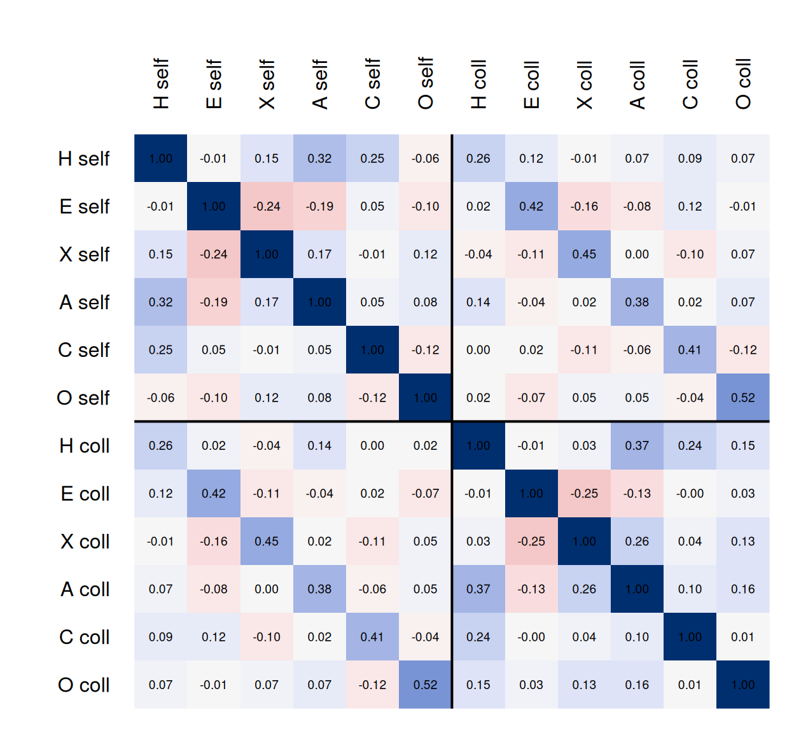

Gathering validity evidence
What this is for
A writing survey given to college students has a confidence scale with an alpha of 0.95, and its scores correlate 0.07 with the students’ course grades. Is the scale failing? That depends on what it is for. Validity as an argument laid out the chain of inferences from responses to a use and which evidence backs each link. This lesson gathers the evidence, mostly the kind that needs outside data. We read a multitrait–multimethod matrix of self- and colleague ratings, ask how far a criterion correlation can be trusted when the measures are unreliable or the sample selected, and measure classification against a criterion that doesn’t borrow from the test.
Goals
By the end of this lesson you should be able to:
- match a source of validity evidence to the inference it backs;
- read a multitrait–multimethod matrix with Campbell and Fiske’s comparisons, and say what a failed comparison means;
- compute criterion and incremental validity, and bound a validity coefficient by reliability;
- say how selection shrinks a validity coefficient, correct it with Thorndike’s case II, and state what the correction assumes;
- compute sensitivity, specificity and the positive predictive value, and say why the base rate and an independent criterion matter.
Core ideas
Which evidence, for which inference?
The sources are described in chapter 1 of the Standards (AERA, APA & NCME, 2014, pp. 13–21; open access). Evidence goes where the inference is most in doubt.
Content evidence is that review, written down: judges independent of the item writers rate how well each item matches the blueprint cell or map level it was written for, and whether the items together cover the domain (Sireci & Faulkner-Bond, 2014). It needs no response data. Cognitive interviews provide response-process evidence.
Internal-structure evidence asks whether the relations among items match what the construct predicts (Rios & Wells, 2014). In Constructs and construct maps, a map’s levels ordered nine number-series items before any data, with a rank correlation of −0.76 against their proportions correct. A test built for one dimension predicts one factor; a test with subscales predicts more.
The rest of this lesson is about relations to other variables: with measures of the same construct and of different constructs, and with criteria the scores should predict (AERA, APA & NCME, 2014, pp. 16–18).
Convergent and discriminant evidence
A score should agree with other measures of the same trait (convergent evidence) and less with measures of different traits (discriminant evidence). Campbell and Fiske (1959) saw a catch: two measures can agree because they share a method, such as the respondent’s way of describing themselves or one colleague’s overall impression. So they measured several traits by several methods and laid out every correlation in a multitrait–multimethod (MTMM) matrix, whose cells come in three kinds:
- validity values: the same trait, measured by different methods;
- heterotrait–heteromethod values: different traits, different methods;
- heterotrait–monomethod values: different traits, the same method.
Campbell and Fiske asked for four things. Validity values clearly above zero. Each larger than the heterotrait–heteromethod values in its row and column. Each larger than the heterotrait–monomethod values for its trait, or else the method may be doing the agreeing. And a similar pattern of trait correlations within every method and across methods.
Try it: build a matrix
Three traits, each measured by self-report and by a colleague’s rating, all with the same reliability. A share of each score’s reliable variance comes from its method (a style of describing oneself, a colleague’s general liking). The heat map is the implied correlation matrix, with the validity values outlined.
At the starting values every validity value (0.56) beats both comparisons. Raise the correlation of traits 1 and 2 to 0.6: their same-method correlation reaches 0.58 and the comparison fails for both, although nothing is wrong with either measure. Set that correlation to 0.3 and the colleague’s method share to 0.5: the validity values fall to 0.47 and the colleague’s ratings of traits 1 and 2 correlate 0.52, another failure. Close traits and a strong method both produce it, and the matrix alone doesn’t say which.
Criterion evidence, and what bounds it
A criterion measures the outcome a score should predict, such as a later grade or a diagnosis. A predictive study measures it later, as in admissions; a concurrent study at about the same time, as when a new screener is checked against an established interview (AERA, APA & NCME, 2014, p. 17). The evidence is usually a correlation, the validity coefficient. What does 0.5 mean? In the widget below, selecting the top half on the predictor puts 65% of those selected above the criterion’s median, against 50% by chance.
Turned around, it gives the correction for attenuation, \(r_{XY}/\sqrt{\rho_{XX'}\rho_{YY'}}\), the correlation the measures would have without their error. It assumes the classical model, and that the reliability estimate counts as error exactly what the two measures don’t share; the real data test the second assumption.
The bound also explains the reliability paradox that Classical test theory and reliability pointed to. Tasks that produce robust experimental effects, such as the Stroop task, do so partly because respondents differ little in the effect, which leaves low reliability (Hedge, Powell & Sumner, 2018). A task with reliability 0.3 can correlate at most \(\sqrt{0.3} \approx 0.55\) even with a perfectly measured criterion, so its small criterion correlations say more about its reliability than about its construct.
Criterion evidence can be incremental: does the new score predict beyond what we already have (Sechrest, 1963)? That is the change in \(R^2\) when it joins a regression.
What if the sample was selected on the predictor? A college sees grades only for the students it admitted, partly for their test scores. In that narrower group scores vary less and the correlation shrinks (comment to Standard 1.21, AERA, APA & NCME, 2014, p. 29).
Try it: selecting on the predictor
Eight hundred applicants with a predictor and a criterion; the ones kept are the top share on the predictor.
With half kept, the correlation drops from 0.52 to 0.34, and the correction returns 0.52. Keep a fifth: 0.30 observed, 0.55 corrected. Now turn on the ceiling, which caps the criterion as a top grade does: the selected points bunch at the top, their line flattens, and the correction gives 0.39 against a pool value of 0.48.
The correction is Thorndike’s case II (Thorndike, 1949): with \(r\) the correlation among the selected and \(u\) the ratio of the pool’s predictor SD to the selected group’s, \[\hat R = \frac{r\,u}{\sqrt{1 - r^2 + r^2u^2}}.\] It assumes selection on the predictor alone and a linear regression with the same residual spread everywhere. When selection works on something related to both, such as an admissions officer’s overall judgment, the restriction is indirect and case II corrects too little (Sackett & Yang, 2000; Hunter, Schmidt & Le, 2006), as the simulation shows.
Classification accuracy
When a score classifies, the criterion is usually a category and the evidence a cross-tabulation. Sensitivity is the share of cases flagged; specificity the share of non-cases cleared.
So a classification study needs a criterion independent of the test: an interview by a clinician who hasn’t seen the screener, or a later outcome. Against the ADHD indicator, sensitivity and specificity were both 1 by construction. The box “What is the AUC?” in that lesson defines the ROC curve, sensitivity against \(1 - \text{specificity}\) as the cut moves, and the AUC, the chance that a random case outscores a random non-case (Hanley & McNeil, 1982; Swets, 1988).
What neither number says is how many flagged respondents are cases. That is the positive predictive value (PPV), and it depends on the base rate, the share of cases in the population screened (Meehl & Rosen, 1955).
Try it: a cut, a curve and a base rate
Non-cases’ scores are normal with SD 1; cases’ scores are shifted up by the separation you choose. Everyone at or above the cut is flagged.
At the starting values (AUC 0.92), 43% of flagged respondents are cases; move the base rate to 0.03 and it falls to 17%, with sensitivity and specificity unchanged. Moving the cut slides the point along the curve, trading one error for the other. Youden’s \(J\), sensitivity + specificity − 1 (Youden, 1950), weighs the two errors equally; problem 1 asks what happens when they aren’t.
What a complete argument would need
Everything above comes from item responses and a few covariates, which is what an IRW table holds, and it backs only some links of an argument. What would the rest look like? Shepard (1993, pp. 431–432) sets out an example from Kane (1992, pp. 531–532): an algebra test used to send college students either to calculus or to a remedial algebra course. The argument for that use rests on seven assumptions, paraphrased in the table with the evidence each needs.
Shepard’s point about this list is that several studies backing the first three assumptions can’t make up for missing evidence on the fifth and sixth (p. 432). For placement in particular she puts the effects of the placement at the centre: students on each side of the cut should end up better off than they would have been without the test (p. 441). Her own cases (the SAT, the General Aptitude Test Battery, and placement in special education and two-year kindergartens; pp. 432–443) follow the same pattern. Response data are strongest on assumptions 3 and 4, the ones that can’t compensate for the rest. The others need course records, studies of instruction and outcomes across the cut, gathered for that use in that setting.
Simulate
Part 1 draws 20,000 applicants whose predictor and criterion correlate 0.5 and selects the top half, either on the predictor (direct) or on a third variable related to the predictor and to what it misses in the criterion (indirect). Part 2 draws a screener whose cases score 2 SDs higher, cuts it at 1.2, and compares base rates of 3% and 30%.
With the seed as written, direct selection lowers the correlation to 0.33 and case II returns 0.50, the pool’s value; indirect selection lowers it to 0.27 and case II returns only 0.32. In part 2, sensitivity (about 0.79) and specificity (about 0.88) barely move while the PPV goes from 0.175 to 0.749. Then set the 0.4 in the line defining z to 0: is indirect selection still a problem?
Download this code to run it in your own R session.
With real data
The main example, de_vries_2022_hexaco_self with de_vries_2022_hexaco_other, is an MTMM matrix in which one trait agrees less with itself across methods than with another trait within each method. The contrast, ieswriting_molloy_2022, carries the criterion analyses: a very reliable scale that predicts almost nothing, and a range-restriction correction whose assumptions fail. Download the code; it needs only base R.
Self and colleagues: an MTMM matrix
De Vries, Broks, Bloemers, Kuntze and de Vries (2022) asked Dutch employees to describe themselves on the HEXACO Personality Inventory–Revised (Lee & Ashton, 2004), and up to three colleagues each to rate them on the observer version: 96 items of the 100-item form (Lee & Ashton, 2018), 16 for each of six traits, answered from 1 (strongly disagree) to 5 (strongly agree). Self-report and a colleague’s rating are our two methods; items appear by code, since their wording is licensed for non-commercial research only.
The tables hold all 434 employees in the data file (the paper analysed 359 after quality checks), so our numbers won’t match the paper’s. The responses arrive unkeyed. We reverse the 48 items the published key reverses (hexaco.org), the same 48 the authors’ data file carries reversed copies of; after keying, higher means more of the trait.
Code
# The CSV links on the tables' landing pages (pinned to one version).
base4 <- "https://redivis.com/api/v1/tables/datapages.item_response_warehouse_4:v7_0."
self <- read.csv(paste0(base4, "de_vries_2022_hexaco_self/rows?format=csv"))
other <- read.csv(paste0(base4, "de_vries_2022_hexaco_other/rows?format=csv"))
head(other, 3)| id | item | resp | rater |
|---|---|---|---|
| 151 | PAgent4 | 2 | colleague1 |
| 48 | PEdepe6 | 2 | colleague1 |
| 168 | PEsent1 | 2 | colleague1 |
Code
c(self_rows = nrow(self), self_targets = length(unique(self$id)),
other_rows = nrow(other), other_targets = length(unique(other$id))) self_rows self_targets other_rows other_targets
41664 434 90528 398 Code
table(rater = other$rater[!duplicated(other[, c("id", "rater")])])rater
colleague1 colleague2 colleague3
393 361 189 Code
# Item codes are P + trait letter (H, E, X, A, C, O) + facet + number. The 96 items
# are the HEXACO-100 without its four Altruism items, and they arrive unkeyed. These
# 48 are reverse-keyed in the published scoring key for the 100-item version
# (hexaco.org, ScoringKeys_100.pdf, items 1R, 6R, 9R, ..., 96R, matched to codes by
# the item order of the authors' data file, which also carries a reversed copy of
# exactly these 48 items).
reversed <- c("POaesa1", "PHsinc1", "PAgent4", "PXsocb2", "PHfair1", "POcrea2",
"PAflex1", "PXsoci2", "POunco2", "PCprud2", "PApati2", "POaesa3", "PEfear4",
"PEanxi4", "PHfair4", "PCperf2", "PEdepe6", "PHgree4", "PCprud3", "PCorga6",
"PAforg7", "PXsses5", "PHsinc5", "POinqu6", "PCdili5", "PEanxi6", "PAflex7",
"PHgree5", "PXlive4", "PHmode6", "PCorga8", "PAforg8", "PXsses8", "PEfear8",
"POinqu8", "PCdili6", "PXsocb8", "PHfair8", "POcrea8", "PAflex8", "PEdepe8",
"PHgree7", "POunco8", "PCprud8", "PApati6", "PXlive7", "PEsent7", "PHmode8")
keyit <- function(d) { d$resp <- ifelse(d$item %in% reversed, 6 - d$resp, d$resp); d }
self <- keyit(self); other <- keyit(other)
traits <- c(H = "Honesty-Humility", E = "Emotionality", X = "Extraversion",
A = "Agreeableness", C = "Conscientiousness", O = "Openness")
wide <- function(d) {
w <- reshape(d[, c("id", "item", "resp")], idvar = "id", timevar = "item", direction = "wide")
names(w) <- sub("^resp\\.", "", names(w))
w[order(w$id), ]
}
ws <- wide(self)
wc1 <- wide(other[other$rater == "colleague1", ]) # the first colleague for each target
items <- setdiff(names(ws), "id")
trait_of <- substr(items, 2, 2)
# Keying check: each keyed item against the rest of its trait's 16 items.
item_rest <- function(w) sapply(items, function(i) {
rest <- setdiff(items[trait_of == substr(i, 2, 2)], i)
cor(w[[i]], rowSums(w[, rest]))
})
round(rbind(self = range(item_rest(ws)), colleague = range(item_rest(wc1))), 2) [,1] [,2]
self 0.15 0.60
colleague 0.14 0.67Every keyed item correlates positively with the rest of its trait (the weakest at 0.15 and 0.14), so key and codes agree. Each trait is scored as the mean of its 16 items, using each target’s first colleague.
Code
alpha <- function(x) {
k <- ncol(x)
k / (k - 1) * (1 - sum(apply(x, 2, var)) / var(rowSums(x)))
}
score <- function(w) sapply(names(traits), function(t) rowMeans(w[, items[trait_of == t]]))
S <- data.frame(id = ws$id, score(ws)); C1 <- data.frame(id = wc1$id, score(wc1))
rel <- rbind(self = sapply(names(traits), function(t) alpha(ws[, items[trait_of == t]])),
colleague = sapply(names(traits), function(t) alpha(wc1[, items[trait_of == t]])))
round(rel, 2) H E X A C O
self 0.80 0.82 0.80 0.83 0.80 0.84
colleague 0.86 0.82 0.82 0.88 0.85 0.85Code
m <- merge(S, C1, by = "id", suffixes = c(".self", ".coll"))
nrow(m) # targets with a self-report and a first colleague's rating[1] 393Trait alphas run from 0.80 to 0.84 (self) and 0.82 to 0.88 (colleague); 393 employees have both.
Code
R <- cor(m[, -1]) # the full matrix is drawn in the next chunk
Rs <- R[1:6, 1:6]; Rc <- R[7:12, 7:12]; Rsc <- R[1:6, 7:12]
off <- row(Rsc) != col(Rsc)
c(validity_min = min(diag(Rsc)), validity_max = max(diag(Rsc)),
hetero_hetero = mean(abs(Rsc[off])), # different trait, different method
hetero_mono = mean(abs(c(Rs[upper.tri(Rs)], Rc[upper.tri(Rc)])))) # different trait, same method validity_min validity_max hetero_hetero hetero_mono
0.257 0.522 0.064 0.127 Code
op <- par(mar = c(1, 5.5, 5.5, 1))
lab <- c(paste(names(traits), "self"), paste(names(traits), "coll"))
image(1:12, 1:12, t(R[12:1, ]), zlim = c(-1, 1), axes = FALSE, xlab = "", ylab = "",
col = hcl.colors(41, "Blue-Red 3", rev = TRUE))
axis(3, 1:12, lab, las = 2, tick = FALSE); axis(2, 1:12, rev(lab), las = 1, tick = FALSE)
text(rep(1:12, 12), rep(12:1, each = 12), sprintf("%.2f", R), cex = 0.6)
abline(v = 6.5, h = 6.5, lwd = 2)
Code
par(op)The validity values run from 0.26 (Honesty-Humility) to 0.52 (Openness), well above the average absolute correlation of different traits by different methods (0.06) or by the same method (0.13). Two colleagues rating the same person give another baseline:
Code
# Sanity check on the pipeline: two colleagues rating the same target.
wc2 <- wide(other[other$rater == "colleague2", ])
C2 <- data.frame(id = wc2$id, score(wc2))
m12 <- merge(C1, C2, by = "id", suffixes = c(".c1", ".c2"))
c(targets = nrow(m12))targets
357 Code
round(sapply(names(traits), function(t) cor(m12[[paste0(t, ".c1")]], m12[[paste0(t, ".c2")]])), 2) H E X A C O
0.30 0.48 0.51 0.41 0.43 0.58 For 357 targets, two colleagues agree at 0.30 to 0.58, much as each agrees with the self-report. Now Campbell and Fiske’s comparisons:
Code
# Campbell and Fiske's comparisons, trait by trait. Each validity value (same trait,
# different method) should beat the 10 different-trait correlations in its row and
# column of the self-colleague block, and the 10 different-trait correlations that
# involve the trait within each method.
cf <- t(sapply(1:6, function(i) {
hh <- abs(c(Rsc[i, -i], Rsc[-i, i])); hm <- abs(c(Rs[i, -i], Rc[i, -i]))
c(validity = Rsc[i, i],
beats_hetero_hetero = sum(Rsc[i, i] > hh), largest_hetero_hetero = max(hh),
beats_hetero_mono = sum(Rsc[i, i] > hm), largest_hetero_mono = max(hm))
}))
rownames(cf) <- traits
round(cf, 2) validity beats_hetero_hetero largest_hetero_hetero beats_hetero_mono
Honesty-Humility 0.26 10 0.14 8
Emotionality 0.42 10 0.16 10
Extraversion 0.45 10 0.16 10
Agreeableness 0.38 10 0.14 10
Conscientiousness 0.41 10 0.12 10
Openness 0.52 10 0.12 10
largest_hetero_mono
Honesty-Humility 0.37
Emotionality 0.25
Extraversion 0.26
Agreeableness 0.37
Conscientiousness 0.25
Openness 0.16Code
round(c(self_HA = Rs["H.self", "A.self"], colleague_HA = Rc["H.coll", "A.coll"]), 2) self_HA colleague_HA
0.32 0.37 Code
# Is the pattern of trait correlations the same within each method?
round(cor(Rs[lower.tri(Rs)], Rc[lower.tri(Rc)]), 2)[1] 0.87Every validity value beats its ten heterotrait–heteromethod values, and the trait correlations follow much the same pattern in both methods (the two sets correlate 0.87). But Honesty-Humility’s validity value, 0.26, is below its correlation with Agreeableness within self-reports (0.32) and within colleagues’ ratings (0.37), and Agreeableness only just passes (0.38 against 0.37).
Shared method or close traits? The overlap appears in self-reports too, which points to the traits; Ashton and Lee (2007) relate both to reciprocal altruism. De Vries et al. note that employees chose their own raters, who may have liked them. Liking would add to the overlap in colleagues’ ratings only, where it is a little larger (0.37 against 0.32).
Does the correction for attenuation help?
Code
# Correct each validity value for unreliability in both ratings, using alpha.
corrected <- diag(Rsc) / sqrt(rel["self", ] * rel["colleague", ])
round(rbind(observed = diag(Rsc), corrected = corrected), 2) H E X A C O
observed 0.26 0.42 0.45 0.38 0.41 0.52
corrected 0.31 0.51 0.56 0.45 0.49 0.62Code
# The colleagues' Honesty-Humility-Agreeableness correlation, corrected the same way.
round(Rc["H.coll", "A.coll"] / sqrt(rel["colleague", "H"] * rel["colleague", "A"]), 2)[1] 0.42Honesty-Humility’s validity value rises from 0.26 to 0.31, and the colleagues’ Honesty-Humility–Agreeableness correlation from 0.37 to 0.42: the comparison still fails. Alpha counts everything the 16 items share as true score, a rater’s general impression included, so the correction removes item-sampling error, not method.
A confident writer, and a grade
The ETS IES Writing Achievement Study collected coursework, grades, admissions test scores and a writing-attitudes survey adapted from MacArthur, Philippakos and Graham (2016) from students in courses aimed mainly at first-year college students (Educational Testing Service, n.d.; licensed CC BY-NC-SA 4.0 at the source, so we quote only two items). Part 2 asks how confident, from 0 to 100% (stored as 0 to 10), a student is of doing 22 writing tasks, such as “I can write a paper using correct grammar” and “I can avoid distractions while I write” (items 2.7 and 2.12 of the survey); higher means more confidence. The criterion is the grade (0 to 4) in the course the survey was given in. ACT scores were converted to the SAT scale by the study team.
Code
base <- "https://redivis.com/api/v1/tables/datapages.item_response_warehouse:v59_0."
ies <- read.csv(paste0(base, "ieswriting_molloy_2022/rows?format=csv"))
c(rows = nrow(ies), students = length(unique(ies$id))) rows students
28250 565 Code
# Part 2 of the survey (items Q2.1 to Q2.22): confidence about writing tasks, 0 to 10.
conf <- ies[grepl("^Q2\\.", ies$item), ]
wconf <- wide(conf)
round(alpha(wconf[, -1]), 2)[1] 0.95Code
st <- unique(ies[, c("id", "cov_participating_course_grade", "cov_sat_total", "cov_cum_GPA")])
names(st) <- c("id", "grade", "sat", "gpa")
st$confidence <- rowMeans(wconf[match(st$id, wconf$id), -1])
st <- na.omit(st)
nrow(st)[1] 526Alpha is 0.95, and 526 students have a grade and a GPA. The SAT column merits a look:
Code
# The most common SAT values. One value stands out.
head(sort(table(st$sat), decreasing = TRUE), 3)
1036.86 1080 1140
116 25 23 Code
imputed <- abs(st$sat - 1036.86) < 0.01
c(students_at_1036.86 = sum(imputed), mean_of_the_rest = round(mean(st$sat[!imputed]), 2))students_at_1036.86 mean_of_the_rest
116 1038 Code
round(c(r_with_them = cor(st$sat, st$grade), r_without = cor(st$sat[!imputed], st$grade[!imputed])), 2)r_with_them r_without
0.43 0.49 Code
k <- st[!imputed, ]
nrow(k)[1] 410116 students have an SAT total of 1036.86, a value no test reports and close to the mean of the others (1038): probably a missing score filled in with the mean, though the documentation doesn’t say. These 116 pull the SAT–grade correlation from 0.49 down to 0.43. We keep the 410 students with a reported score.
Code
round(cor(k[, c("grade", "gpa", "sat", "confidence")]), 2) grade gpa sat confidence
grade 1.00 0.76 0.49 0.07
gpa 0.76 1.00 0.45 0.08
sat 0.49 0.45 1.00 0.12
confidence 0.07 0.08 0.12 1.00Code
m_sat <- lm(grade ~ sat, data = k)
m_both <- lm(grade ~ sat + confidence, data = k)
round(c(R2_sat = summary(m_sat)$r.squared, R2_sat_confidence = summary(m_both)$r.squared,
p_added = anova(m_sat, m_both)[2, "Pr(>F)"]), 2) R2_sat R2_sat_confidence p_added
0.24 0.24 0.77 Confidence correlates 0.07 with course grade and 0.08 with GPA; SAT, 0.49 and 0.45. Adding confidence to SAT leaves \(R^2\) at 0.24 (\(p\) = 0.77): no incremental validity for grades. Is that evidence against the scale? Against using it to predict grades, yes. But it was built to measure motivation to write (MacArthur et al., 2016), and better grades for confident writers was never part of its argument.
Restricting the range
Suppose a college had admitted only the top half of these students on SAT.
Code
# Keep only students above the median SAT, as if the college had admitted them alone.
top <- k[k$sat > median(k$sat), ]
u <- sd(k$sat) / sd(top$sat) # how much wider SAT is in the full group
case2 <- function(r, u) r * u / sqrt(1 - r^2 + r^2 * u^2)
r_top <- cor(top$sat, top$grade)
round(c(n_top = nrow(top), r_all = cor(k$sat, k$grade), r_top = r_top, u = u,
case_II = case2(r_top, u)), 2) n_top r_all r_top u case_II
202.00 0.49 0.27 1.53 0.39 Among the 202 students above the median SAT, the correlation is 0.27, down from 0.49. SAT’s SD is 1.53 times larger in the full group, and case II gives 0.39: most of the way back, but short. Why?
Code
# Case II assumes the regression of grade on SAT is linear with the same spread of
# residuals everywhere. Compare the two halves.
bottom <- k[k$sat <= median(k$sat), ]
fit_half <- function(d) { f <- lm(grade ~ I(sat / 100), data = d); c(slope_per_100 = coef(f)[[2]], resid_sd = sigma(f)) }
round(rbind(bottom = fit_half(bottom), top = fit_half(top)), 2) slope_per_100 resid_sd
bottom 0.38 1.13
top 0.25 0.91Code
round(c(share_grade_4_top = mean(top$grade == 4), share_grade_4_bottom = mean(bottom$grade == 4)), 2) share_grade_4_top share_grade_4_bottom
0.48 0.15 Case II assumes the same line, with the same scatter, in both halves. The slope is 0.38 grade points per 100 SAT points in the bottom half and 0.25 in the top, and the residual SD falls from 1.13 to 0.91. Grades stop at 4.0, and 48% of the top half got one (15% of the bottom half): the widget’s ceiling.
Both corrections rest on assumptions the data can question. The correction for attenuation assumes the reliability estimate counts as error exactly what two measures don’t share; alpha doesn’t when raters carry an impression across traits. Case II assumes direct selection and a straight, evenly scattered regression; grades have a ceiling. When I correct a validity coefficient, for unreliability or for range restriction, I report the observed value first and the corrected one beside it, with the assumption the correction rests on; I don’t report the corrected value alone. Standard 1.21 asks for both values and the method (AERA, APA & NCME, 2014, p. 29). A correction is a model, and it comes with a model’s assumptions.
Problems
- Where to cut. For the ROC widget’s screener (non-cases \(N(0, 1)\), cases \(N(d, 1)\)), show that the cut maximizing Youden’s \(J\) is \(d/2\). Now minimize the total share misclassified, \(p(1 - \text{sensitivity}) + (1 - p)(1 - \text{specificity})\), for base rate \(p\). Where is the cut, and which way does it move as \(p\) falls?
- All the colleagues. Average each target’s available colleagues (up to three) in
de_vries_2022_hexaco_other, recompute the MTMM matrix, and correct the validity values for attenuation. Which trait gains most, and does Honesty-Humility now pass the same-method comparison? What does averaging raters remove that correcting with alpha doesn’t? - GPA. Repeat the range-restriction analysis with cumulative GPA as the criterion. Does case II fall short, land on the full-group value, or overshoot? Use the slopes and residual SDs in the two halves to explain why.
- Which use? Write two uses for the confidence scale’s scores, one for which its failure to predict grades counts against it and one for which it is beside the point. For the second, what evidence would you gather instead?
- Plan a classification study. A new 10-item screener targets a condition with 3% prevalence, and you can afford 200 diagnostic interviews. How many cases would 200 randomly chosen people include, and what does that do to your estimate of sensitivity? Whom would you interview instead, and how would you keep the interviewer independent of the screener?
- Challenge: an unreliable task. A cognitive task has retest reliability 0.3. What is the largest correlation it can have with a criterion of reliability 0.8? Would a correlation near that bound convince you the task measures a stable trait, and what else would you want to see? This is open.
Going further
- AERA, APA, & NCME. (2014). Standards for educational and psychological testing. American Educational Research Association. https://www.testingstandards.net/open-access-files.html. Chapter 1 describes the sources of validity evidence (pp. 13–21) and sets standards for criterion studies, including reporting adjusted and unadjusted coefficients (Standard 1.21); open access.
- Campbell, D. T., & Fiske, D. W. (1959). Convergent and discriminant validation by the multitrait-multimethod matrix. Psychological Bulletin, 56(2), 81–105. https://doi.org/10.1037/h0046016. The MTMM matrix and the four comparisons.
- Widaman, K. F. (1985). Hierarchically nested covariance structure models for multitrait-multimethod data. Applied Psychological Measurement, 9(1), 1–26. https://doi.org/10.1177/014662168500900101. The MTMM matrix as a factor model with trait and method factors.
- Sireci, S., & Faulkner-Bond, M. (2014). Validity evidence based on test content. Psicothema, 26(1), 100–107. https://doi.org/10.7334/psicothema2013.256. How content evidence is gathered and summarized.
- Rios, J., & Wells, C. (2014). Validity evidence based on internal structure. Psicothema, 26(1), 108–116. https://doi.org/10.7334/psicothema2013.260. Dimensionality, reliability and invariance as internal-structure evidence.
- Shepard, L. A. (1993). Evaluating test validity. Review of Research in Education, 19, 405–450. https://doi.org/10.3102/0091732X019001405. Validity as the evaluation of a test use, with Kane’s placement argument and cases on the SAT, the GATB and placement in special education and kindergarten.
- Kane, M. T. (1992). An argument-based approach to validity. Psychological Bulletin, 112(3), 527–535. https://doi.org/10.1037/0033-2909.112.3.527. The placement argument in the table.
- Lane, S. (2014). Validity evidence based on testing consequences. Psicothema, 26(1), 127–135. https://doi.org/10.7334/psicothema2013.258. The source of evidence this lesson doesn’t reach.
- Hunsley, J., & Meyer, G. J. (2003). The incremental validity of psychological testing and assessment: Conceptual, methodological, and statistical issues. Psychological Assessment, 15(4), 446–455. https://doi.org/10.1037/1040-3590.15.4.446. How to design and read an incremental-validity study.
- Sackett, P. R., & Yang, H. (2000). Correction for range restriction: An expanded typology. Journal of Applied Psychology, 85(1), 112–118. https://doi.org/10.1037/0021-9010.85.1.112. The kinds of selection, and the correction each needs.
- Hunter, J. E., Schmidt, F. L., & Le, H. (2006). Implications of direct and indirect range restriction for meta-analysis methods and findings. Journal of Applied Psychology, 91(3), 594–612. https://doi.org/10.1037/0021-9010.91.3.594. A correction for indirect restriction, and how much it changes validity estimates.
- Meehl, P. E., & Rosen, A. (1955). Antecedent probability and the efficiency of psychometric signs, patterns, or cutting scores. Psychological Bulletin, 52(3), 194–216. https://doi.org/10.1037/h0048070. Base rates, and when a test adds nothing to them.
- Swets, J. A. (1988). Measuring the accuracy of diagnostic systems. Science, 240(4857), 1285–1293. https://doi.org/10.1126/science.3287615. The ROC curve across many fields.
- Hedge, C., Powell, G., & Sumner, P. (2018). The reliability paradox: Why robust cognitive tasks do not produce reliable individual differences. Behavior Research Methods, 50(3), 1166–1186. https://doi.org/10.3758/s13428-017-0935-1. Why tasks with robust experimental effects can give unreliable measures of individual differences; see also the IRW vignette on the reliability paradox.
Data sources
Data from the Item Response Warehouse (each table name links to its IRW page); references from IRW biblio.
de_vries_2022_hexaco_self: de Vries A, et al. (2022) Self-, other-, and meta-perceptions of personality: Relations with burnout symptoms and eudaimonic workplace well-being. PLOS ONE. https://doi.org/10.1371/journal.pone.0272095. Licence: CC BY 4.0.de_vries_2022_hexaco_other: de Vries A, et al. (2022) Self-, other-, and meta-perceptions of personality: Relations with burnout symptoms and eudaimonic workplace well-being. PLOS ONE. https://doi.org/10.1371/journal.pone.0272095. Licence: CC BY 4.0.ieswriting_molloy_2022: Educational Testing Service. (n.d.). IES Writing Achievement Study Data. GitHub. Retrieved January 6, 2025, from https://github.com/EducationalTestingService/ies-writing-achievement-study-data. Licence: CC BY 4.0.
For instructors
- Source: new material, not in EDUC 252. The lesson was added after the landscape analysis (
notes/landscape-2026-09-24.md), where convergent and discriminant evidence, the MTMM matrix, criterion validity, range restriction and classification accuracy each appear in 5 or 6 of 11 first-course syllabi. The sources of evidence follow chapter 1 of the Standards. - Timing: about 50 minutes for the core ideas and widgets; the two real-data analyses work as a 30-minute lab. Problems 4 and 5 work as small-group discussions.
- Held back: consequences as evidence (only in Going further); the MTMM matrix as a factor model (only in Going further); internal structure in depth (Factor analysis I, Factor analysis II); invariance across groups (Factor analysis II); predictive bias, named here, and item-level bias (Differential item functioning); cut scores as decisions (What does a score mean?).
- Data: the HEXACO item wording is licensed for non-commercial research only (hexaco.org), so no item is quoted. The writing survey is CC BY-NC-SA 4.0 at its source, stricter than the CC BY 4.0 on its IRW page; the lesson follows the source and quotes two items. Classification accuracy has no IRW table: none found pairs a screener with an independent diagnosis, so the widget, the simulation and the recall of the ADHD tables carry it.
- Solutions: held back in
solutions/validity-evidence.qmd(not published). Problem 6 is open.